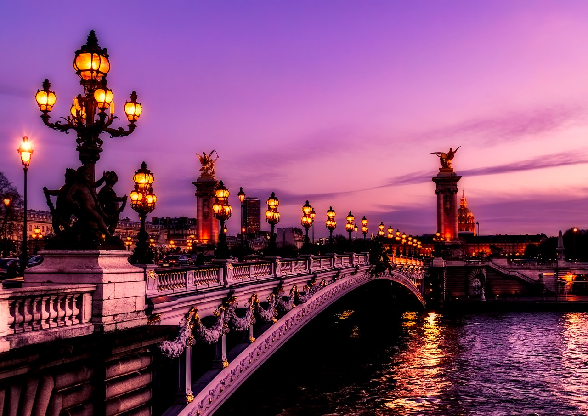
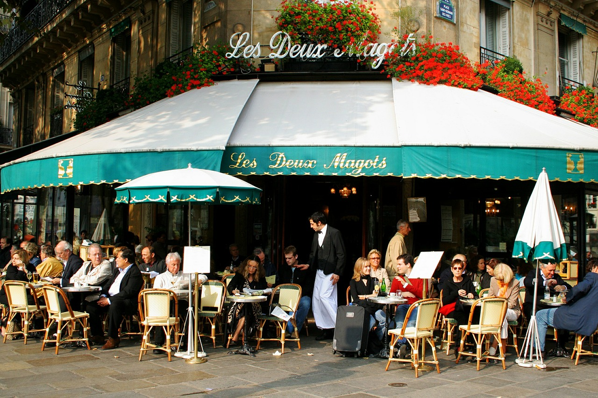
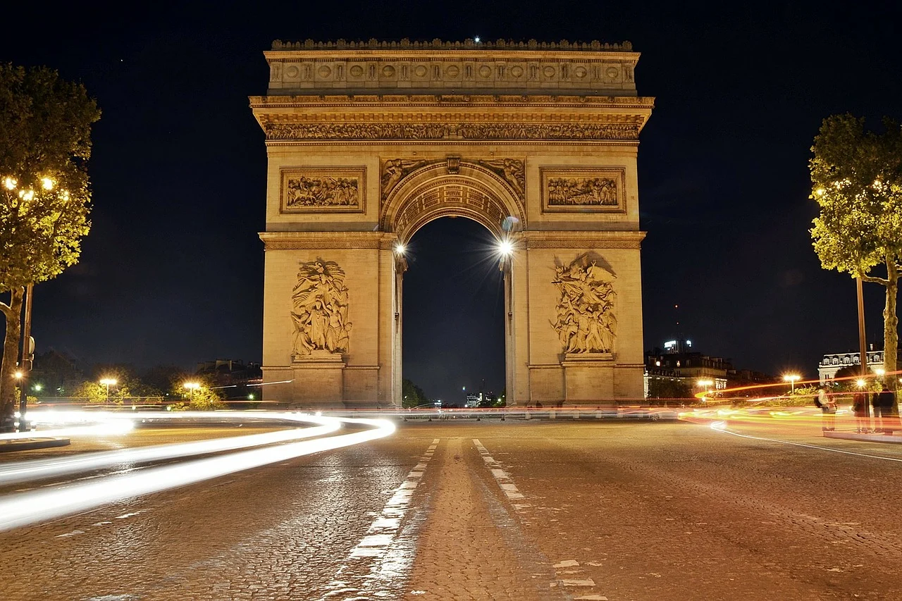
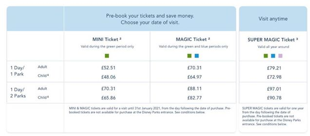

Francúzsko
Paríž
Mesto Lásky & Mesto Svetiel

Dôvody prečo navštíviť Paríž
- Veľkolepá história

- Prekrásna zeleň
- Eiffelova veža
- Mesto filozofov, básnikov a džezových spevákov
- Tajúplné uličky
- Disneyland
- Mesto lásky
- Čarovný Versailles 
- Živá hudba, nočné kluby
- Ranna káva pri výhľade na Eiffelovu vežu
- Kúzelne plavby loďou
- Jedinečné Víno
- Najdrahší obraz-Mona Lisa
- Hrobka najslávnejšieho cisára Napoleona I

Čo sa oplatí vidieť
- La Défense

- Arc de Triomphe
- Place de la Concorde
- Tuilerijské záhrady
- Museé du Louvre
- Pont des Arts
- Eiffelová veža
- Pamätník Diany 
- Notre Dame
- Bazilia Sacré- Coeur
- Wall of love
- Moulin Rouge
- Versailles

Čo by ste mali vedieť
- Občania európskej únie do 24 rokov majú zadarmo vstup do (Múzea Louvre, Arc de Triomphe a platí zľava aj na výstup Eiffelovu vežu)
- V paríži sa nachádza viac ako 150 múzeí
- Na prejdenie všetkých známych pamiatok Vám bude treba minimálne 4 dni.
- Paríž je považovaný za módny gombík sveta
- Cenník na Eiffelovu vežu
- Paríž priláka za jeden rok okolo 25 miliónov turistov
- Ceny potravín sú nízke. Platí pravidlo: Čím viac kúpite tým menej zaplatíte
- V reštauráciach je prepitné 15 % zarátané v cene.
- Versailles je vzdialený od Paríža cca 20km
- Cenník do Disneylandu
- Eiffelovu vežu denne navštívi 18 000 turistov
- Na Disneyland Vám bude potrebný celý deň


Krátke video na prehliadku Paríža
Kto teda sme ? Cestovatelia ? Študenti?

Moje meno je Miloš. Niečo o mne v skratke. Navštevujem strednú školu a po pri tom sa snažím zbierať nové skúsenosti zo sveta. Užívam si momenty na cestách, plné nových zážitkov, kamarátov a zábavy. Okrem toho sa venujem programovaniu a taktiež športu. Som otvorený novým možnostiam a rád spoznávam nových ľudí. Ak by si mal záujem sa dozvedieť niečo viac tak neváhaj a píš. Som tu pre teba vždy k dispozícií.

Ja som Monika, no takmer všetci ma volajú Mony. Síce som neprecestovala ešte veľa krajín, avšak to sa chystám čím skôr zmeniť a predsa len mám, čo to za sebou. Cestovanie milujem, pretože spoznávanie nových miest robí zo mňa svojim spôsobom lepšieho človeka a pomáha mi napredovať v živote. Najviac mi v srdci utkvel Londýn. Neviem vám vysvetliť prečo, ale toto mesto je pre mňa niečím výnimočné. Ako vždy hovorím, mysľou som stále v Anglicku, duša patrí Taliansku, no srdce vždy patrilo a aj bude Slovensku. ❤ Vo voľnom čase sa venujem fotografovaniu, umeniu, rada tvorím a mám v hlave milión nápadov. Snažím sa vidíte krásu aj tam, kde by ju človek nečakal a tešiť sa z maličkostí. Dúfam, že vy sa budete tešiť z opisu miest, ktoré som navštívila, a že vás možno aj inšpirujem. 🙈.Pokiaľ by ste chceli vidieť "behind the scenes" z mojich ciest, môžete si ich pozrieť v highlight stories u mňa na instagrame: simpson_mony 🖤

Volám sa Zuzka. Mám 19 rokov. Nesiem si zo sebou obrovské zážitky z cestovania, ktoré ma stále posúvajú napred. Vďaka cestovaniu, som mala možnosť spoznať novýh ľudí, spoznať miestnú kultúru krajín, jedlá a zvyky. Naučila som sa zodpovednosti a samozrejme som si rozšírila obzor vedomosti. Vo voľnom čase sa venujem programovaniu, posilovaniu a samozrejme foteniu.
Máš aj ty chuť cestovať a užívať si tak ako ja ? Vzdialiť sa od problému a načerpať nové sily ? Tak Si píš, že si určite budeme spolu rozumieť 👌 😉.
Sledovať má môžeš na instagrame pod menom Sue.zu😜
Teším sa na Vaše zážitky.